На скриптовых языках удобно разрабатывать… И на этом удобство заканчивается. Вне машины разработчика начинаются проблемы. Особенно если вы пишете какой-то прикладной тулинг — cli-утилиты, вспомогательные приложения в вашем SDK и прочее. Вы даже не можете рассчитывать на то, что у пользователя будет pip, чтобы он смог поставить все ваши зависимости, вам все нужно организовать самостоятельно.
В этой статье поговорим о различных формах распространения Python-приложений. Какие есть подходы и инструменты, почему они могут не сработать и как чинить возникающие проблемы.
Если вам покажется, что в чем-то я ошибаюсь, добро пожаловать в комментарии. Буду рад услышать любые альтернативные точки зрения. Кроме, как я уже отметил в заголовке, рекомендации переписать все на Go/Rust/You name it :) Этот холивар мы уже проходили.
Для начала коротко вводные. Я — Арсений Сапелкин, тимлид в команде, которая занимается инструментами разработчика для собственной микроядерной операционной системы «Лаборатории Касперского» KasperskyOS. Наша ОС существенно отличается от других систем, поскольку внутри — не Linux-ядро. Отличий довольно много, даже процессы здесь запускаются и взаимодействуют друг с другом не так, как мы привыкли. Поэтому тулинг нам часто приходится делать свой, стараясь упростить жизнь разработчика.
У нас есть эмулятор KasperskyOS — это форк-qemu с нашей логикой поверх него. Есть консольная cli-утилита с широким функционалом и большим количеством зависимостей. Через нее разработчик может быстро сгенерировать приложение, собрать и задеплоить устройство, запустить эмулятор и т. п. По сути, для него это единая точка входа. У нас также есть плагин для VS Code, который позволяет почти все то же самое делать в этом редакторе.
Почти все это мы пишем на Python и поставляем в составе deb-пакетов. У нас также есть модули, переиспользуемые в других проектах на Python. Задача — упаковать все это так, чтобы быть уверенными в работоспособности тулинга вне машины разработчика. При этом речь пойдет только про *nix, потому что наш SDK пока что предназначен только для этого семейства ОС.
Данная статья не является описанием готового решения, к которому мы пришли, но содержит описание рабочих способов, которые были нами изучены.
Требования к тулингу
Начнем с требований, которые мы предъявляем к тулингу в SDK.
Обязательно:
Было бы неплохо в контексте тулинга:
В целом ни для кого не секрет, что Python для этого не очень подходит. Со времени возникновения языка такая проблема вообще не ставилась и не решалась, этот язык изначально для другого.
Python hasn’t ever had a consistent story for how I give my code to someone else, especially if that someone else isn’t a developer and just wants to use my application.
© Russell Keith-Magee
Но в этой статье я хочу показать, что не все так плохо. Если вам, как и нам, все-таки хватает причин писать на Python, есть много способов решить эти проблемы.
Почему мы все-таки пишем на Python
Первая и основная причина в том, что еще до того, как мы начали системно подходить к этому вопросу, на Python было написано уже достаточно много инструментов. Вторая причина в том, что среди сотрудников компании язык очень распространен, буквально все знают его как второй. В итоге Python устраивал нас в вопросе скорости разработки, поиска разработчиков и простой интеграции с другими инструментами в компании. Нельзя однозначно утверждать, что решение было принято верное, однако пока мы не пожалели.
Вот это реальное видео с питоном, которого посадили в управляемую трубу с ногами,
кажется удачной метафорой для темы статьи
(не переживайте, с пятнистым красавцем
экспериментаторы вели себя максимально вежливо).
Для демонстрации инструментов я написал небольшое приложение, которое не делает ничего полезного. Оно просто зависит от нескольких библиотек — pycurl, psycopg2, clickе (далее станет понятно, почему я выбрал именно эти библиотеки). Также у приложения есть свое C-расширение, которое просто проверяет, что все правильно импортируется и работает.
Его код на самом деле не принципиален, но он доступен на GitHub. Там есть скрипты, которые собирают приложения с помощью разных способов упаковки (внимание, спойлеры!), описанных ниже, а также запускают бенчмарки и тесты.
Пока нам важно, что если все идет хорошо, то приложение работает как-то так:
-> % python3 -m myapp.myapp run
psycopg2 works!
pycurl works!
myextension works!
Ну что же, пациент готов, давайте экспериментировать.
Pex (Python EXecutable)
Начнем с самого первого и достаточно простого способа, который не требует почти никаких приседаний. Это pex, ⭐2.4k.
Вы знаете, что Python умеет интерпретировать zip-архивы? Формат ZIP-архива, являющегося приложением, описан в PEP 441. Работает он достаточно просто — прямо в zip-архиве первой строчкой идет шебанг, который и показывает ОС, что его надо запустить через Python. Далее происходит некоторая магия, которая нам сейчас не особо интересна.
-> % cat myapp.pex
#!/usr/bin/env python3.11
PK^C^D^@!^K^@^@^@.bootstrap/^C^@^@^@^@ ^@^@^@^O^@^@^@.bootstrap/pex/^@
...
Pex — это инструмент, который позволяет засунуть в этот архив все, что нам нужно. Например, можно добавить любое сложное окружение (весь virtualenv) и носить его с собой.
-> % pex $(pip freeze) -o my_virtualenv.pex
-> % deactivate
-> % ./my_virtualenv.pex
Python 3.11.5
(InteractiveConsole)
>>>import ....
Можно добавить наш пакет, чтобы запускалось конкретное приложение.
-> % pex . -c myapp -o myapp.pex
-> % ./myapp.pex run
psycopg2 works!
pycurl works!
myextension works!
Инструмент разработан компанией (тогда еще) Twitter для упрощения деплоя веб-сервисов. Как пишут авторы, благодаря pex для обновления становится достаточным вызов scp.
У pex много преимуществ, например простота как использования, так и внутреннего устройства, также вариативность паковки — он позволяет собрать пакет под несколько платформ.
Но вот с перформансом может возникнуть проблема.
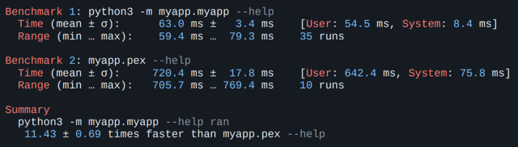
Когда все запущено, разницы во времени работы приложения не будет никакой. Но, к сожалению, нам важен именно перформанс первого запуска. Такова специфика тулинга. Здесь не нужно, чтобы сервер обрабатывал много запросов в секунду, но нужно, чтобы пользователь мог быстро стартануть, так что перформанс ограничивается первой секундой. А здесь время старта будет очень медленным, просто потому, что ZIP-архив — это не бесплатно. Его надо прочитать, куда-то распаковать и т. д. На моем маленьком примере простого вывода хелпа утилита работала в 10 раз медленнее.
Но давайте попробуем pex. Команда от нас ничего не требует — все подхватывается автоматически и круто работает.
-> % pex . -c myapp -o myapp.pex
-> % ./myapp.pex run
psycopg2 works!
pycurl works!
myextension works!
Попробуем запустить на другой машине с той же самой Ubuntu, что и у нас (ну и, естественно, с тем же Python, чтобы интерпретировать pex). И происходит что-то странное:
-> % docker run ubuntu_with_python:latest ./myapp.pex run
File "/root/.pex/installed_wheels/53...b9/
psycopg2-2.9.7-cp311-cp311-linux_x86_64.whl/psycopg2/__init__.py"
, line 51, in <module>
from psycopg2._psycopg import ( # noqa
ImportError: libpq.so.5: cannot open shared object file: No such file or directory
На той системе, куда мы поставили наше приложение, нет библиотеки libpq, которая требуется одной из зависимостей — psycopg. Эту проблему можно решить и для pex самостоятельно, о чем мы скажем позже, но сам pex нам в этом не поможет, так что здесь мы не будем на этом останавливаться.
Предлагаю подвести итог по pex (а дальше и по всем остальным инструментам) в виде такой таблички.
Обозначения следующие:
Пиктограммы обозначают следующее:
В принципе, результат неплохой. Только он не поддерживает системные зависимости, не позволяет взять с собой Python и просаживает производительность. Но если вы контролируете окружение и не требовательны к скорости запуска, это очень интересный способ поставки.
Пакуемся в deb-пакет
Более наивная работа с такими зависимостями — это spotify/dh-virtualenv, ⭐1.6k.
Этот инструмент пакует Python-приложение в deb-пакет, таким образом позволяя управлять зависимостями через системный менеджер пакетов.
Пакет dh-virtualenv использовать не обязательно, аналог легко написать самому. dh-virtualenv просто комбинирует virtualenv и deb-пакет, позволяя прописывать системные зависимости. И все это делается буквально за пару строк, к примеру:
debian/rules
%:
dh $@ --with python-virtualenv
override_dh_virtualenv:
dh_virtualenv --setuptools --python /usr/bin/python3
debian/control
...
Build-Depends: python3-dev, python3-setuptools, python3-pip, dh-virtualenv
...
Package: myapp
Depends: ${shlibs:Depends}, ${misc:Depends}, libcurl4-openssl-dev, libpq-dev, python3 (>= 3.8)
Собирается одной командой:
-> % dpkg-buildpackage -us -uc -b
Теперь пакет можно установить на другой машине:
-> % dpkg-deb -I myapp_0.1-1_amd64.deb
…
Depends: libc6 (>= 2.28), libcurl4 (>= 7.56.1),
libexpat1 (>= 2.1~beta3), libpq5 (>= 10~~),
libssl1.1 (>= 1.1.0), zlib1g (>= 1:1.2.0),
libcurl4-openssl-dev, libssl-dev, libpq-dev
...
-> % dpkg -i myapp_0.1-1_amd64.deb
-> % /opt/venvs/myapp/bin/myapp run
psycopg2 works!
pycurl works!
myextension works!
Подведем итоги:
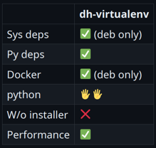
Результат неплохой, но хорошо подходит только тем, кто уверен, что целевой платформой всегда будет Debian. Инструмент используется в Spotify для деплоя Python-сервисов.
AppImage
Если погуглить вопрос поставки портабельных приложений под Linux, можно быстро наткнуться на такие инструменты, как flatpak, snap и AppImage. Рассмотрим AppImage, в нашем случае он подходит лучше, так как не требует установщика и специального тулинга на машине пользователя.
Чтобы запаковать с помощью AppImage Python-окружение и приложение, есть готовый проект python-appimage,⭐157. В случае моего подопытного приложения все делается одной командой.
-> % python-appimage build app .
...
-> % ./myapp-x86_64.AppImage run
...
В дополнение python-appimage публикует готовые пакеты с портативным интерпретатором, т. е. они будут работать везде.
Стоит сказать пару слов о том, как AppImage-файл устроен внутри. В начале файла есть небольшой исполняемый кусок, который оставшийся файл монтирует как squash-fs, и дальше уже с этой системы происходит запуск приложения. Работает этот механизм довольно быстро, но все-таки до нативного Python по скорости запуска будет далеко — AppImage на моем приложении оказался в 3–4 раза медленнее.
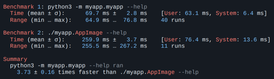
Однако это лучше, чем pex. На мой взгляд, все, что в рамках 300 мс, нормально для консольного инструмента.
Но есть проблема с Docker. Монтирование и в целом использование fuse требует определенных привилегий, поэтому AppImage не запустится в контейнере, запущенном без опций: “--cap-add SYS_ADMIN --device /dev/fuse:mrw --cap-add MKNOD”
-> % sudo docker run debian-fuse:latest myapp.AppImage --help
fuse: device not found, try 'modprobe fuse' first
open dir error: No such file or directory
Для кого-то это может быть неважно, но для нас этот фактор критичен. Если подводить итоги, то в принципе все неплохо.
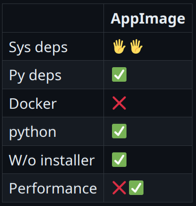
AppImage подойдет тем, для кого Docker не актуален, а скорость запуска не принципиальна. К примеру, для многих графических приложений.
Если нужен просто исполняемый файл — причем без использования fuse и без установщика — можно довольно быстро найти популярный pyinstaller. Но здесь я решил рассказать не про него, а про pyoxidizer. Мой коллега, Евгений Пистун, провел исчерпывающее исследование на эту тему, и по итогам нашим фаворитом стал именно pyoxidizer, ⭐5.2k. Это довольно интересный проект.
Pyoxidizer хорош своей очень гибкой системой конфигурирования. В качестве языка конфигурации используется язык Starlark, похожий на сам Python. Ниже на примере моего приложения описано, какой Python нужно запаковать в бинарник, какой пакет установить.
def make_exe():
dist = default_python_distribution(python_version = '3.8')
…
exe = dist.to_python_executable(
…
for resource in exe.pip_install(["myapp"]):
exe.add_python_resource(resource)
...
register_target("exe", make_exe)
...
Доступно много всяких настроек — можно попросить установить в это окружение пакеты с PyPI, добавить ресурсов, указывать, откуда подтягивать эти библиотеки (из памяти или с диска). Работает под macOS, Linux и Windows.
Что самое вкусное — это производительность. На своем приложении я даже сначала не поверил — pyoxidizer работает быстрее, чем запуск нативного Python. И специально для этого я ничего не делал (взял по дефолту) — по идее, все это можно еще ускорить.
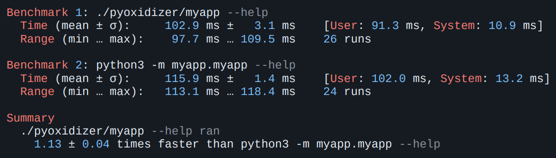
Это прикольно, но не думаю, что pyoxidizer действительно будет существенно быстрее во всех случаях. Однако будем считать, что платы производительностью за эту упаковку почти нет. Подводя итоги:
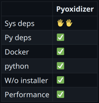
Единственное, что хочется отметить, pyoxidizer хорошо подойдет для тех, у кого много свободного времени. На то, чтобы получить хоть как-то работающий бинарник, у меня ушло 40 минут. По-моему, там все действительно сложно.
Осталось рассмотреть последний и самый интересный способ — конвертацию Python-кода в С с последующей его компиляцией.
Компилировать можно с помощью специальных инструментов, например:
Но cython и codon нам не подходят, так как влияют на то, как нам приходится писать код, а мы хотим не подстраивать код под способ паковки. Здесь гораздо лучше подойдет nuitka. Я про нее расскажу далее, но пока несколько слов о том, почему это вообще возможно и достаточно легко — почему за один вечер можно на коленке написать отдаленное подобие такого инструмента.
У самой распространенной реализации Python-интерпретатора — cpython — есть очень хорошо описанное C API, давайте продемонстрируем, что любую строку Python можно при помощи него перевести на C.
Например, у нас есть приложение, которое импортирует пару модулей, выполняет какие-то функции и выводит результат на экран:
import json
from urllib import request
response = request.urlopen('https://api64.ipify.org?format=json')
ip_info = json.load(response)
print(f"Public IP: {ip_info['ip']}")
Чтобы перевести его на C, понадобится Python.h.
#include <Python.h>
int main ()
{
Py_Initialize();
...
}
Импортировать остальные модули мы можем практически такими же командами.
Прошу учесть, что этот код написан для примера и у него не будет обработки ошибок. Пожалуйста, не пишите так код на C. Каждая строчка здесь потенциально может взорваться.
Python:
import json
from urllib import request
C:
PyObject *jsonModule = PyImport_ImportModule("json");
PyObject *requestModule = PyImport_ImportModule("urllib.request");
Получим и вызовем нужные нам функции:
Python:
response = request.urlopen('https://api64.ipify.org?format=json')
ip_info = json.load(response)
C:
PyObject *urlopen = PyObject_GetAttrString(requestModule, "urlopen");
PyObject *args = Py_BuildValue("(s)" , "https://api64.ipify.org?format=json");
PyObject *response = PyObject_CallObject(urlopen, args);
PyObject *loadFunc = PyObject_GetAttrString(jsonModule, "load");
PyObject *ip_info = PyObject_CallObject(loadFunc, Py_BuildValue("(O)" , response));
И в конце выводим результат.
Python:
print(f"Public IP: {ip_info['ip']}")
C:
PyObject *pyStr = PyObject_Str(ipString);
const char *str = PyUnicode_AsUTF8(pyStr);
printf("Public IP: %s\n" , str);
Получился чистый С, который можно собрать, и он не будет ни от чего зависеть, кроме libc (если статически слинковаться с libpython).
Py_Initialize();
PyObject *jsonModule = PyImport_ImportModule("json");
PyObject *requestModule = PyImport_ImportModule("urllib.request");
PyObject *urlopen = PyObject_GetAttrString(requestModule, "urlopen");
PyObject *args = Py_BuildValue("(s)" , "https://api64.ipify.org?format=json");
PyObject *response = PyObject_CallObject(urlopen, args);
PyObject *loadFunc = PyObject_GetAttrString(jsonModule, "load");
PyObject *ip_info = PyObject_CallObject(loadFunc, Py_BuildValue("(O)" , response));
PyObject *ipString = PyObject_GetItem(ip_info, Py_BuildValue("s" , "ip"));
PyObject *pyStr = PyObject_Str(ipString);
const char *str = PyUnicode_AsUTF8(pyStr);
printf("Public IP: %s\n" , str);
Примерно так работают все подобные инструменты. Если зайти в код nuitka, обнаружим там аналогичную генерацию С-кода. Насколько я понял, он использует парсер самого cpython — прогоняет его и делает огромное количество оптимизаций. Дальше код отправляется в gcc или clang.
Nuitka, ⭐10.7k — это на самом деле Анютка. Создатель инструмента назвал его в честь своей супруги, нашей соотечественницы.
Поговорим о плюсах Nuitka:
-> % python -m nuitka --standalone myapp.py --onefile -o myapp
-> % ldd myapp
linux-vdso.so.1 (0x00007ffe29b2b000)
libc.so.6 => /lib/x86_64-linux-gnu/libc.so.6 (0x00007f5b5f9ba000)
/lib64/ld-linux-x86-64.so.2 (0x00007f5b5fc0e000)
Автор начинал этот проект с мыслью ускорить код на Python. Но на примере cli-утилиты я этого не увидел. Пробовал разные оптимизации, включая экспериментальные, но скорость запуска никак не увеличивалась.
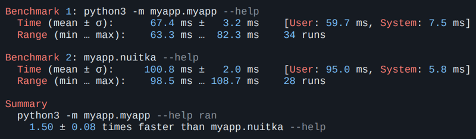
При этом скорость запуска все же неплохая. Замедление в полтора раза. Если подводить итоги, кажется, что все очень круто. Системные зависимости nuitka какой-то магией нашла — увидела, что Python-модуль пытается импортировать системные библиотеки, нашла их на машине, где все собиралось, и затащила к себе. Все зависимости Python, очевидно, тоже. Установщика нет, перформанс отличный.
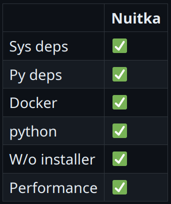
Минусы, конечно, тоже есть.
Не надо забывать, что это будет не тот самый «питонячий» код, который вы писали. Это будет другой язык, скомпилированный вовсе не так, как задумал создатель Python. К слову, Гвидо ван Россум ненавидит этот проект и публично его критикует.
Как и в pyoxidizer, какие-то вещи могут пропасть. Например, в pyoxidizer пропадает переменная _file — она просто не работает. У nuitka похожая история с sys.path. Если вы в программе меняете это значение, nuitka может этого не заметить. Также она может не заметить динамический импорт плагинов в коде. Я ради интереса пробовал перевести в С и скомпилировать Pytest с каким-то плагином. Чтобы это сработало, пришлось сделать небольшое приседание, потому что nuitka не видела, что плагин тоже нужно сконвертировать, — мы сделали это руками. Но после этого все прекрасно заработало. Этот пример можно найти на GitHub по этой ссылке.
Такого рода подводные камни всегда будут вылезать. С этим придется смириться.
И нужно быть осторожнее с лицензиями. Существуют такие лицензии, которые, например, разрешают использование в виде исходного кода, но не в виде статически слинкованного объектного файла. Не зная этого, условия можно случайно нарушить. Но все это легко проверяется специальными скриптами.
Попробуем собрать наше приложение в один бинарник. Как я говорил выше, одной командой без каких-либо заморочек:
python -m nuitka --standalone myapp.py --onefile -o myapp
На выходе получаем бинарный файл. Проверим, что он действительно самодостаточен:
-> % docker run -v$PWD:$PWD -w$PWD ubuntu:latest ./myapp run
psycopg2 works!
pycurl works!
myextension works!
Класс, все работает. Но в то же время у другого клиента…
-> % docker run -v$PWD:$PWD -w$PWD ubuntu:20.04 ./myapp run
./myapp: ...libc.so.6: version `GLIBC_2.33' not found (required by ./myapp)
./myapp: ...libc.so.6: version `GLIBC_2.34' not found (required by ./myapp)
Это произошло потому, что, зайдя на территорию С и всех этих сложных штук, мы забыли, что нужно учитывать зависимость всех исполняемых файлов (и вообще всего в этом мире) от glibc. Это стандартная библиотека языка С. Если на машине, где собирали пакет, glibc была свежей версии, то получившийся исполняемый файл может требовать свежую версию и на машине клиента.
Вот так это выглядит: myapp ссылается на свежие glibc 2.34 и 2.33:
-> % objdump -T ./myapp | grep GLIBC
...
000...000 DF *UND* 000...000 (GLIBC_2.34) __libc_start_main
...
000...000 DF *UND* 000...000 (GLIBC_2.33) fstat
...
А glibc на машине клиента версии 2.31:
-> % docker run ubuntu:20.04 ldd --version
ldd (Ubuntu GLIBC 2.31-0ubuntu9.9) 2.31
Упс...
Даже если вы запускаете обычный код Python, проблема все равно может вас задеть, потому что существуют C-расширения. На PyPI полно пакетов, в которые включены не очень хорошо собранные бинарники с плохими зависимостями.
Беспроблемные пакеты — те, у которых вообще нет C-расширений или которые собраны правильно.
Во-первых, надо собираться со старой glibc. Glibc имеет обратную совместимость — если что-то собрано на Ubuntu 17, на Ubuntu 20 оно тоже заработает. А вот обратное не гарантируется.
Во-вторых, если у ваших пакетов есть внешние зависимости, надо их взять с собой. И это значит, что библиотеки, которые пакуются с собой, тоже должны быть правильно собраны.
Для решения этой проблемы был нужен какой-то контракт, и в Python он есть и называется manylinux. Это серия тегов, стандартизирующих совместимость бинарного пакета с версиями Linux.
Наверное, вы видели wheel-пакеты с расширением C, у которых platform tag (последняя секция перед .whl) — manylinux***. Как раз этот тег и говорит нам, что пакет может быть совместим с большим количеством Linux-ов.
Вообще Linux-дистрибутивы — это огромная куча-мала. Поэтому не получится пообещать «anylinux» или «everylinux». Manylinux — это такой прагматичный подход. Пакет будет работать не везде, но на большинстве распространенных дистрибутивов. Этот платформенный тег стандартизировали всего около 10 лет назад.
Эволюция manylinux:
Как читать платформенный тег на примере «manylinux_2_5_x86_64»:
То есть читается как «работает на практически всех мейнстримовых дистрибутивах linux x86_64 с версией glibc 2.5 и выше». Звучит запутанно, но если к этому привыкнуть, все не так страшно. Почти любой manylinux — это хорошо.
Все это дается далеко не бесплатно, и проблем у manylinux тоже хватает:
Поэтому, перед тем как пытаться охватить все распространенные дистрибутивы, подумайте, нужна ли вам эта штука. Вы же знаете, какой у вас Linux. Возможно, стоит собрать пакет только под него? Есть даже целый проект no-manylinux, отключающий использование этого тега.
Хотя большая часть мейнстримовых пакетов давно поставляются с тегом manylinux, есть исключения.
Примеры пакетов без тега manylinux:
Для многих пакетов это оправданно. Например, логично, что pykerberos использует системную библиотеку, а не свою собственную. То же самое касается libvirt.
Если в названии файла есть platform tag, можно просто сравнить его со списком платформ и понять, есть ли с ним проблема.
Формат имени пакета: {python tag}-{abitag}-{platform tag}.whl
В pycurl-7.45.2-cp38-cp38-linux_x86_64.whl тег платформы — это linux_x86_64. Но это вообще не гарантия. Я могу собрать какой-то свой дистрибутив Linux, использовав вместо libc что-то другое неизвестной версии. И собравшись там, тоже получу тег linux_x86_64. Однако работать пакет нигде не будет. То есть на самом деле нам надо проверить все наши зависимости. Это можно сделать с помощью трех строк в bash или Python — кому как нравится.
allowed_tags = ["any", "manylinux1"...
platform_tags = parse_wheel_filename(filename).platform_tags
assert any(tag in allowed_tags for tag in platform_tags)
Мы для этого написали простой скрипт, который проверяет все пакеты.
В скрипт можно передать путь до Wheelhouse, и он найдет все ошибки.
-> % pip3 wheel -r requirements.txt --wheel-dir wheelhouse
-> % whl-tags-checker.py wheelhouse any manylinux2014_x86_64 manylinux_2_5_x86_64
Error: wheel package without supported platform tags was found:
pycurl-7.45.2-cp311-cp311-linux_x86_64.whl.
Error: wheel package without supported platform tags was found:
psycopg2-2.9.7-cp311-cp311-linux_x86_64.whl.
Так мы увидим, что pycurl и psycopg собраны у нас на машине и не manylinux, т. е. не могут считаться безопасно портируемыми.
Чтобы это исправить, как я уже писал, есть специальные docker-ы, ⭐1.3k. Можно просто собираться в них.
-> % docker run quay.io/pypa/manylinux2010_x86_64
-> % /opt/python/cp38-cp38/bin/pip wheel pycurl -w weelhouse
…
Created wheel for pycurl:
filename=pycurl-7.45.2-cp38-cp38-linux_x86_64.whl
...
А следующим шагом натравить на пакет специальную утилиту, которая называется auditwheel. Это еще одна официальная утилита от проекта PyPI, которая принимает на вход колесо и проверяет, соответствует ли оно тегу manylinux.
-> % auditwheel repair pycurl-7.45.2-cp38-cp38-linux_x86_64.whl
Repairing pycurl-7.45.2-cp38-cp38-linux_x86_64.whl
Previous filename tags: linux_x86_64
New filename tags: manylinux_2_17_x86_64, manylinux....
Previous WHEEL info tags: cp38-cp38-linux_x86_64
New WHEEL info tags: cp38-cp38-manylinux_2_17_x86_64, ...
Fixed-up wheel written to
...pycurl-7.45.2-cp38-cp38-manylinux_2_17_x86_64.ma....
Главное после этого — не забывать устанавливать колеса из wheelhouse, чтобы pip не попытался выкачать из сети неправильную версию.
pip3 install --no-index --find-links ./wheelhouse
Подведем итоги.
Правильный платформенный тег важен независимо от выбранного способа поставки, будь то nuitka, pex, appimage и т. д. Если вы хотите, чтобы это работало где-то еще, платформенные теги надо обязательно проверять. И собираться так, чтобы ничего не испортить, — т. е. использовать правильные инструменты.
При этом переносимость не бесплатна — помимо безопасности мы можем потерять еще и производительность. Например, тестовое приложение, собранное через gcc6 с Python 3.8 через nuitka, работает почти в два раза медленнее, чем собранное с актуальным питоном актуальным компилятором.
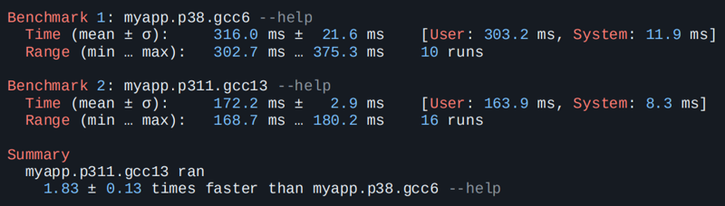
Причин может быть много, но самая очевидная — gcc свежей версии применяет какие-то оптимизации, как и свежий Python.
Последнее, о чем хочу рассказать, — как не выбирать ни один из вариантов, а сделать все руками, следуя правилам про правильные пакеты.
Нужно просто взять с собой правильный Python, т. е. тот, который сам по себе соответствует тегу manylinux:
Итоговая таблица получилась не очень полезная, но все же:
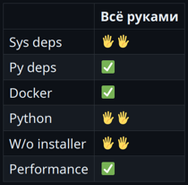
Этот вариант хорошо подходит при наличии готовой схемы распространения SDK.
Готового тулинга, который работает хорошо, уже очень много. То есть классическая проблема поставки Python-приложения значительно уменьшилась. При этом нужно соблюдать несколько правил. И, конечно, можно наткнуться на какие-нибудь подводные камни. Без этого, к сожалению, никуда.
В целом за последние 10 лет Python сделал много шагов в правильном направлении, что очень радует. Есть попытки пойти еще дальше — я наткнулся на пока еще не принятый PEP 711, который предлагает стандартизировать колеса для Python. То есть предполагается сделать полностью переносимое колесо, в котором уже будет Python.
Напоследок я свел все в одну табличку. Если вы не знаете, с чего начать, посмотрите на эти результаты и выберите, что больше подходит.
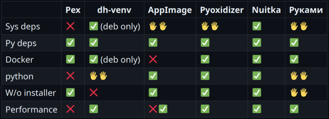
Проект-песочница на GitHub. Для его работы не нужно ничего, кроме Docker. Там есть тесты переносимости — приложение просто запускается на Ubuntu 17, 20, 22; Debian 8, 9, 10; Open Suse и т. д. А еще там есть бенчмарки, которые показывают, что pyoxidizer всех рвет.
-> % make build
-> % make portability-test
Success: myapp_nuitka_onefile passed on ubuntu:17.04
Success: myapp_nuitka_onefile passed on ubuntu:20.04
Success: myapp_nuitka_onefile passed on debian:9
Success: myapp_nuitka_onefile passed on opensuse/leap:15.0
... etc ...
-> % make benchmark
Benchmarking startup time...
Summary
pyoxidizer/myapp --help ran
3.21 ± 0.26 times faster than myapp_nuitka_as_folder/myapp --help
5.72 ± 0.71 times faster than myapp_nuitka_onefile --help
7.04 ± 1.53 times faster than myapp.AppImage --help